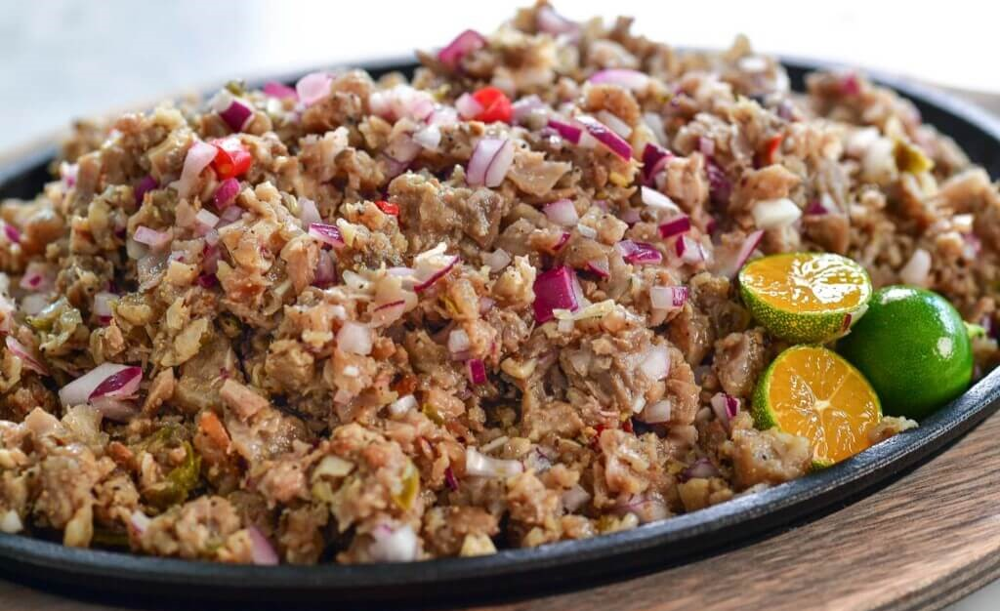

Pork Sisig

Description:
A beloved Filipino dish, Pork Sisig is a delightful combination of grilled pork parts tossed in a creamy and tangy dressing.
Known for its rich flavors and contrasting textures, this dish is perfect as a main course or a pulutan (bar snack) shared with friends and family.
The smoky aroma from the grill, the zesty tang of citrus, and the subtle spice from the dressing come together to create a flavor-packed experience that’s hard to resist.
- Prep Time: 30 minutes
- Cook Time: 1 hour 30 minutes
- Servings: 5 people
Ingredients:
Main Ingredients
1 lb pig ears
1 lb pig snout
1 lb pork belly
2 pieces onions, minced
3 pieces bay leaves
2 teaspoons salt
4 thumbs ginger, crushed
1 quart water
Sisig Dressing
½ cup Lady’s Choice Mayonnaise
2 tablespoons sukang iloko (see note 1)
¼ teaspoon ground black pepper
1 teaspoon salt
1 teaspoon sugar
¼ cup liver spread (see note 2)
2 limes (see note 3)
1 tablespoon Knorr Liquid Seasoning
Equipment
1 Grill (gas or charcoal)
Instructions
-
Boil the Pork Parts:
In a cooking pot, combine pig ears, snout, pork belly, ginger, bay leaves, salt, and water.
Boil for 1 hour, then remove the pork parts and drain the water.
-
Grill:
Preheat your grill.
Grill the pork parts for around 5 minutes per side until slightly charred.
Remove from the grill and let them cool.
-
Prepare the Dressing:
In a bowl, combine all dressing ingredients: mayonnaise, sukang iloko, ground black pepper, salt, sugar, liver spread, lime juice, and Knorr Liquid Seasoning.
Mix well.
-
Chop and Combine:
Chop the grilled pork parts into small pieces. In a large mixing bowl, combine the chopped pork, minced onions, and dressing.
Toss until well combined.
-
Serve:
Transfer the sisig to a serving plate and serve with your favorite drink. Share and enjoy!
Notes
- Sukang Iloco:This vinegar, made from fermented sugar cane juice, has a bold flavor akin to wine vinegars. If unavailable, use cane vinegar, white vinegar, or distilled vinegar.
- Liver Spread Alternative:Fresh chicken livers are traditionally used for sisig, boiled and mashed into a paste. Liver spread or pâté offers a convenient substitute.
- Citrus Options:Limes work well for sisig, but calamansi (calamondin) is a more authentic choice if accessible.